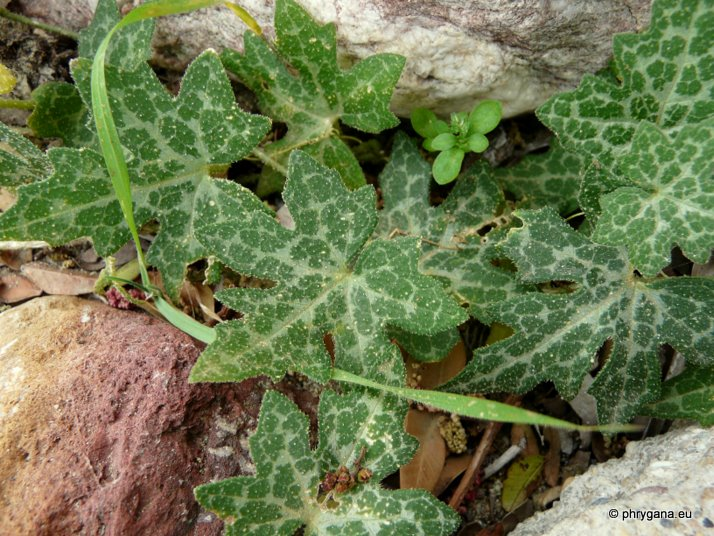
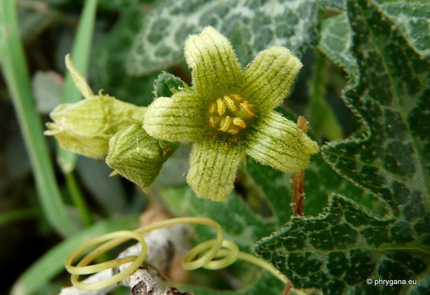
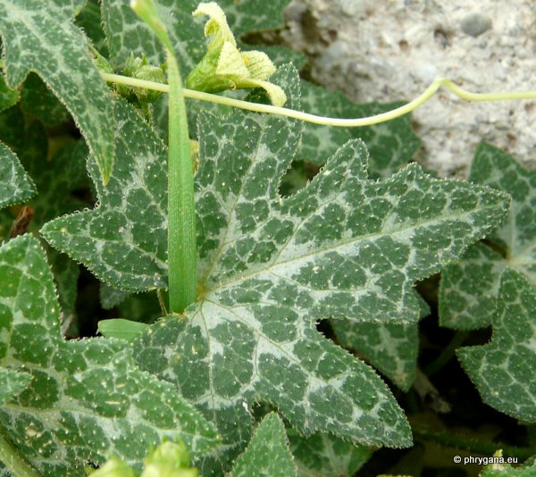

| PHRYGANA | Fauna | Flora |
additions nouveautés |
espèces species |
contact -
info - commentaires phrygana1 (at) gmail.com |
| Particularités crétoises | Galles et mines |
| Bryonia cretica L. subsp. cretica |
| 299 | Flora | CUCURBITACEAE | Bryonia L. |
|
 Bryonia cretica Erymoupoli (Ithanos) 30 mars 2011 |
| en: White Bryony | |
| Plante dioïque, grimpante. | |
| Feuilles: pétiolées, palmées à lobes profonds, obtus, poilues, marbrées de blanc; vrilles longues , enroulées, opposés aux feuilles | |
| Tige poilue, succulente; racines tubéreuses. | |
| Fleurs: jaune pâle, les fleurs mâles en petites grappes, les fleurs femelles solitaires à l'aisselle des feuilles; stigmates poilus | |
| Fruit: baie sphérique (6 - 10 mm), vert marbré de blanc à l'état jeune, rouge à maturité | |
| Hauteur: 100 - 450 cm | Type biologique: géophyte tubéreux et grimpant |
| Floraison: mars avril mai juin | |
| Altitudes: 0 - 780 (-1000) m | |
| Statut en Crète: indigène | |
| Biotopes en Crète: terrains rocailleux, olivaies, murs de jardins, fourrés, ruines | |
| Distribution: région Méditerranéenne orientale | |
| Note: plante héliophile | |
| Observation: espèce calciphile | |
| Note: plante médicinale | |
|
 Bryonia cretica Erymoupoli (Ithanos) 30 mars 2011 |
|
 Bryonia cretica Erymoupoli (Ithanos) 30 mars 2011 |
| 01 janvier 2012 |
| © paul fontaine -- © Phrygana.eu 2007 -- 2013 |